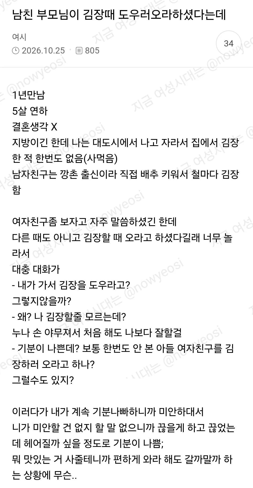

근데 대도시는 얼마정도 돼야 대도시냐 광역시 특례시급이면 대도시냐
내 느낌상으론 한국의 메가시티 서울 뿐인데
이건 어머니가 내 귀한 아들이 5살 많은 여자랑 만나고 있어서 떨쳐버리고 싶을때 가장 좋은 방법을 떠올린거 같은데 ㅋㅋ
남자가 잘못전달한거겠지
저런 개념없는 남자가 있어?
김장인데 와라 -> 와서 새김치 가져가고 맛난거 먹고가라
인거같은데 남자가 병신인듯
김장할 때 얼굴도 볼 겸 와서 얻어먹으러 오라는 거 아니었을까
얼굴도 안 본 사람한테 김장 도우라는 건 좀 이해가 안 되는데
여시꺼 퍼와서 뭔 왈가왈부를 ㅋㅋㅋ
일베꺼 퍼와도 그럴래?ㅋㅋㅋㅋ
근데 김장때 와라고 한게 꼭 같이 김장담그자 소리는 아니지 않음?
그때 가족들 다 오니 김장때와서 인사한번 하고 김치가 가져가라고 할수도 있잖아
인사를 왜 김장할 때 가서 해?
김장 다하고 부르는 것도 아니고..
김장때 오라는게 김장할때아침부터 오라는건지 일끝나고 오라는건지 모르는거니 추측해보는거임
김장해야 한다는 말도
오로지 남친의 그렇치않을까? 이 두리뭉실한 대답뿐이고
김장때 불러서 갔는데 뒷짐지고 멀뚱멀뚱 있다가 남이 한 김치 가져가기만 하라고? 상식적으로? 보통 그 시즌에 가면 일꾼 되는거임
난 김장하러 오라는거 괜찮던데.
끝나고 수육도 먹고, 김치도 챙겨주시고, 할게 있으니 덜 어색하고.
남자새끼 집구석이 통으로 병신이네ㅋㅋ
물론 여초발 분탕포르노겠지만
결혼전에도 저정도면 결혼하면 어떨지ㅋㅋㅋ
여자가 나이가 많아서 깨려는 부모님의 큰그림일수도
김장 15년차 전문가가 얘기해보자면
김장은 준비하는 날이 더 힘들다
배추 절이고 속재료 준비하는게 힘듦
그리고 속싸는 김장날은 그냥 서서 속만 싸면 됨
오전에하고 점심 먹고 끝
속 싸는 사람이 많아야 일이 빨리 끝나다보니
손이 많이 필요함
그래서 김장날 와서 김장 속 좀 싸고
밥먹고 먹을 거 얻어가라는 거 같은데
사실 도시 출신이면 공감하긴 어려운 건 사실이지
만약 내 여친 아부지가 김장하러 김장날 오라고
하면 무조건 가서 거들고 얻어먹고 옴
어쨌는 남자새끼가 잘못한거구만 ㅋㅋㅋ
결혼 전에 김장날 부르는 건 일단 그 전에 인사드렸다는 전제 하에 여자랑 어머니랑 어느 정도 친분이 있어야 가능할까 말까라고 생각함
5살 연하면 참고 만나야지 ㅋㅋㅋㅋ
나도 결혼 안한 여친 집에 김장하러가는데 좋아하고 편하면 가는거지 만사가 불편한 상폐년아
여자 나이가 많은가
보통 어른들은 '이 나이 때 쯤엔 상대한테 해도 되는 거, 시켜도 되는 거' 이런 게 정해 져 있어서
구여친 김장할때 가서 돕고 그랬는데 다 의미없더라
난 갈만 한거같은데 본문에서 가기 싫어하는것도 이해됨
테스트하는거 같긴 함
이미 결혼생각중일듯
5살연하 남자라는거겠지?
5살 연상 남자만나면 대우가 바뀔거같은데
눈낮추기가 힘들듯